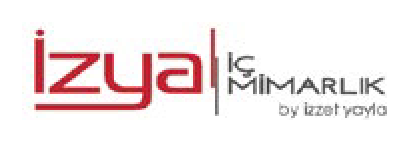
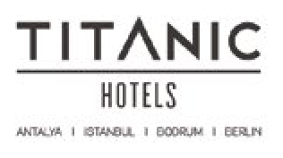
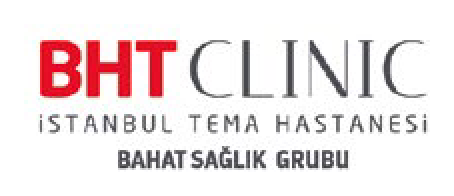

İzya İç Mimarlık
Mobilya & İç Mimari
Stand No: A3-10, A3-12

Giresun İçin İş Birliği, Türkiye İçin Güç Birliği
8–11 Ekim 2026 · Dr. Mimar Kadir Topbaş Gösteri ve Sanat Merkezi
Giresun EXPO
Fuar, Giresun'un ekonomik gücünü dört başlıkta bir araya getiriyor.
Giresun'un sanayi, tarım ve gıda üretimindeki birikimi.
Yeni yatırım fırsatlarını görünür kılmak ve yatırımcıyla buluşturmak.
Yeni ticaret ağları kurmak ve ihracatı desteklemek.
Kurumların ortak hedefler doğrultusunda birlikte hareket etmesi.
Fuar hakkında
Giresun EXPO, Giresun'un ekonomik, ticari ve girişimcilik potansiyelini ulusal ve uluslararası ölçekte tanıtmayı amaçlayan kapsamlı bir iş dünyası buluşmasıdır.
Organizasyon; yatırımcıları, üreticileri ve girişimcileri bir araya getirerek yeni iş birliklerinin kurulmasına ve Giresun'un marka değerinin güçlenmesine katkı sunacaktır.

Organizasyon


Katılımcı Firmalar

Mobilya & İç Mimari
Stand No: A3-10, A3-12
Metal, Makine & Sanayi
Stand No: T1-10

Turizm & Konaklama
Stand No: T2-07

Sağlık
Stand No: T2-13
Ziyaret
Fuar dört gün boyunca ziyarete açık.
| Gün | Tarih | Saat |
|---|---|---|
| Perşembe | 8 Ekim 2026 | 10.00 – 19.00 |
| Cuma | 9 Ekim 2026 | 10.00 – 19.00 |
| Cumartesi | 10 Ekim 2026 | 10.00 – 20.00 |
| Pazar | 11 Ekim 2026 | 10.00 – 18.00 |

Konum
Yenikapı; Marmaray ile M1A, M1B ve M2 metro hatlarının kesiştiği bir aktarma noktası.

Sıkça sorulanlar
8–11 Ekim 2026 tarihlerinde, İstanbul Yenikapı Etkinlik Alanı'ndaki Dr. Mimar Kadir Topbaş Gösteri ve Sanat Merkezi'nde düzenlenecek.
Perşembe ve Cuma 10.00–19.00, Cumartesi 10.00–20.00, Pazar 10.00–18.00 saatleri arasında ziyarete açık.
Yenikapı, Marmaray ile M1A, M1B ve M2 metro hatlarının kesiştiği bir aktarma noktasıdır. Anadolu Yakası'ndan M4 ile Ayrılık Çeşmesi'ne gelip Marmaray'a aktarma yapabilir, Üsküdar'dan doğrudan Marmaray'a binebilirsiniz. Çevrede 30D, 31, 31Y, 50Y, 70FY ve 70KY İETT hatları hizmet veriyor.
Evet. Özel aracıyla gelecek ziyaretçiler için Yenikapı Etkinlik Alanı çevresinde otopark imkânı bulunuyor.
Katılımcı firmalar fuar alanında stant açıyor. Fuar; kamu kurumlarını, özel sektörü, yatırımcıları, üreticileri, sanayicileri, girişimcileri, üniversiteleri, kooperatifleri ve sivil toplum kuruluşlarını aynı çatı altında buluşturuyor.
Hayır. Giresun EXPO'ya giriş ücretsizdir; tüm ziyaretçilerimizi fuar alanına bekliyoruz.
Ziyaretinizi şimdiden planlayın; fuar günü doğrudan stantlara gidin.